discord.js-html-transcript
The most advanced library for generating beautiful, pixel-perfect Discord chat HTML transcripts with full modern UI support.


Unlike other transcript packages that dump text into basic HTML, this library perfectly renders the native Discord UI - every button, embed, poll, voice message, and thread is pixel-perfect. The output is a standalone HTML file that works offline.
Installation
Install with your preferred package manager. Requires Node.js 16+ and discord.js v14 or v15.
npm install discord.js-html-transcriptpnpm add discord.js-html-transcriptyarn add discord.js-html-transcriptQuick Start
The simplest way to generate a transcript and send it in a channel.
const discordTranscripts = require('discord.js-html-transcript');
client.on('interactionCreate', async (interaction) => {
if (!interaction.isChatInputCommand() || interaction.commandName !== 'transcript') return;
const transcript = await discordTranscripts.createTranscript(interaction.channel, {
returnType: 'attachment',
filename: `transcript-${interaction.channel.id}.html`,
limit: -1,
poweredBy: true,
});
await interaction.reply({
content: 'Here is the transcript!',
files: [transcript],
});
});createTranscript(channel, options?)
Fetches all messages from a Discord channel and returns the rendered HTML transcript. This is the primary function for most use cases.
Parameters
| Parameter | Type | Description |
|---|---|---|
channel | TextBasedChannel | The Discord channel to generate the transcript from. |
options | CreateTranscriptOptions | Optional configuration object. See Options below. |
Returns
Depending on returnType: an AttachmentBuilder, Buffer, or string.
Example
const { createTranscript, ExportReturnType } = require('discord.js-html-transcript');
// Generate as an AttachmentBuilder (default)
const attachment = await createTranscript(channel, {
returnType: ExportReturnType.Attachment,
filename: 'transcript.html',
limit: -1,
});
// Generate as a raw HTML string
const html = await createTranscript(channel, {
returnType: ExportReturnType.String,
});
// Generate as a Buffer
const buffer = await createTranscript(channel, {
returnType: ExportReturnType.Buffer,
});generateFromMessages(messages, channel, options?)
Generates a transcript from a pre-fetched array or Collection of messages. Use this when you want full control over which messages to include.
Messages should be passed in chronological order (oldest first). The library does not sort them automatically.
Parameters
| Parameter | Type | Description |
|---|---|---|
messages | Message[] | Collection | Array or Collection of messages to render. |
channel | Channel | The channel these messages belong to (used for header info). |
options | GenerateFromMessagesOptions | Optional configuration object. |
Example
const messages = await channel.messages.fetch({ limit: 50 });
const transcript = await discordTranscripts.generateFromMessages(
messages,
channel,
{
returnType: 'attachment',
filename: 'partial-transcript.html',
}
);
await channel.send({ files: [transcript] });Options
Both createTranscript and generateFromMessages accept an options object. All fields are optional.
| Option | Type | Default | Description |
|---|---|---|---|
returnType | 'attachment' | 'buffer' | 'string' | 'attachment' | The output format of the generated transcript. |
filename | string | 'transcript-{id}.html' | The name of the file if returning an attachment. |
limit | number | -1 | Max messages to fetch. -1 fetches all messages. (createTranscript only) |
filter | (msg) => boolean | undefined | Filter function evaluated per message. (createTranscript only) |
saveImages | boolean | false | Downloads images and encodes them as base64 data URIs. |
saveAssets | boolean | false | Downloads all supported assets as base64 data URIs. |
assets | object | {} | Fine-grained asset preservation. See Asset Preservation. |
features | object | {} | Toggle UI features. See Feature Toggles. |
callbacks | object | {} | Custom resolver callbacks. See Callbacks. |
poweredBy | boolean | true | Whether to show the "Powered by" footer. |
footerText | string | 'Exported {number} message{s}.' | Custom footer text. {number} and {s} are placeholders. |
favicon | 'guild' | string | 'guild' | Set to 'guild' to use the server icon, or pass a custom URL. |
hydrate | boolean | false | Whether to provide React hydration props in the output HTML. |
Feature Toggles
Control which interactive features are injected into the transcript via options.features. All features default to enabled.
| Feature | Default | Description |
|---|---|---|
search | true | Built-in message search bar with keyboard shortcuts (Ctrl+F). |
imagePreview | true | Click any image to open a fullscreen lightbox overlay. |
spoilerReveal | true | Click on spoiler tags to reveal hidden content. |
messageLinks | true | Click a reply reference to smooth-scroll to the original message. |
profileBadges | true | Render APP badges, server tags, and role icons next to usernames. |
embedTweaks | true | Client-side CSS fixes for embed borders and styling. |
Example
const transcript = await createTranscript(channel, {
features: {
search: true,
imagePreview: true,
spoilerReveal: true,
messageLinks: true,
profileBadges: true,
embedTweaks: false, // disable embed style fixes
},
});Asset Preservation
By default, transcripts reference remote Discord CDN URLs for images and avatars. These URLs expire over time. Use options.assets to embed specific asset types directly into the HTML as base64 data URIs for permanent offline access.
| Asset | Default | Description |
|---|---|---|
attachments | false | User-uploaded images, videos, audio, and file attachments. |
embeds | false | Embed images, thumbnails, video posters, and author/footer icons. |
components | false | Media gallery items, thumbnails, and file components. |
avatars | false | User profile pictures used throughout the transcript. |
emojis | false | Custom Discord emojis and standard Twemoji images. |
guildIcons | false | Server icon shown in the transcript header/favicon. |
inviteIcons | false | Server icons inside invite link preview cards. |
roleIcons | false | Highest-role icon images displayed next to usernames. |
serverTagBadges | false | Badge images shown inside server tag labels. |
Example - Full Offline Transcript
const { createTranscript, TranscriptAssetDownloader } = require('discord.js-html-transcript');
const transcript = await createTranscript(channel, {
assets: {
attachments: true,
embeds: true,
avatars: true,
emojis: true,
guildIcons: true,
inviteIcons: true,
roleIcons: true,
serverTagBadges: true,
},
callbacks: {
resolveAssetSrc: new TranscriptAssetDownloader()
.withMaxSize(10240)
.build(),
},
});Image Compression
When saving assets, file sizes can grow significantly. Use the TranscriptImageDownloader class with sharp to automatically resize and compress images to WebP before embedding.
You must install sharp separately: npm install sharp
TranscriptImageDownloader
| Method | Description |
|---|---|
.withMaxSize(kb) | Skip images larger than this size in kilobytes. |
.withCompression(quality, webp?) | Set compression quality (1-100) and optionally force WebP conversion. |
.build() | Returns the resolveImageSrc callback function. |
Example
const { TranscriptImageDownloader } = require('discord.js-html-transcript');
const transcript = await createTranscript(channel, {
callbacks: {
resolveImageSrc: new TranscriptImageDownloader()
.withMaxSize(5120) // Skip images > 5MB
.withCompression(40, true) // 40% quality, force WebP
.build(),
},
});Callbacks
Override how channels, users, roles, invites, and assets are resolved via options.callbacks.
| Callback | Signature | Description |
|---|---|---|
resolveChannel | (id: string) => Channel | null | Resolve a channel mention by ID. |
resolveUser | (id: string) => User | null | Resolve a user mention by ID. |
resolveRole | (id: string) => Role | null | Resolve a role mention by ID. |
resolveInvite | (code: string) => InviteData | null | Resolve a Discord invite code into rich preview data. |
resolveImageSrc | (attachment) => string | null | Custom image resolver (e.g. TranscriptImageDownloader). |
resolveAssetSrc | (asset) => string | null | Custom asset resolver (e.g. TranscriptAssetDownloader). |
Example - Custom Invite Resolver
const transcript = await createTranscript(channel, {
callbacks: {
resolveInvite: async (code) => {
const invite = await client.fetchInvite(code).catch(() => null);
if (!invite?.guild) return null;
return {
name: invite.guild.name,
icon: invite.guild.iconURL({ size: 128 }),
online: invite.presenceCount ?? 0,
members: invite.memberCount ?? 0,
};
},
},
});UI Previews
Click any image to zoom in. Every element is rendered to match the native Discord UI.
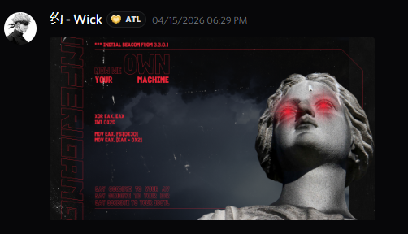
Image Attachment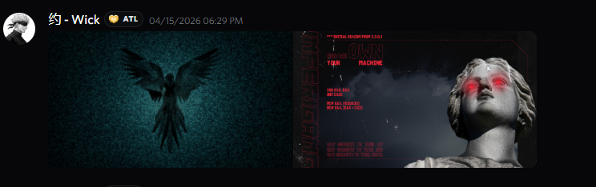
Multi-Image Gallery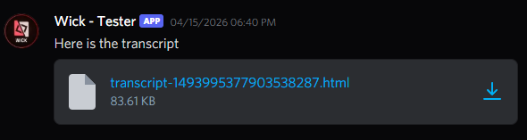
File Attachment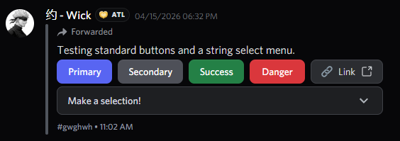
Buttons & Select Menu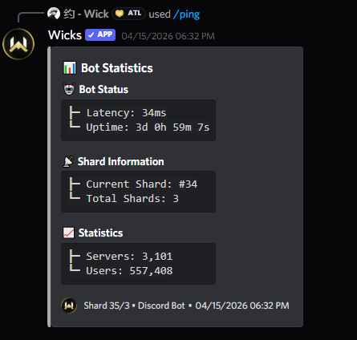
Slash Command & Voice Message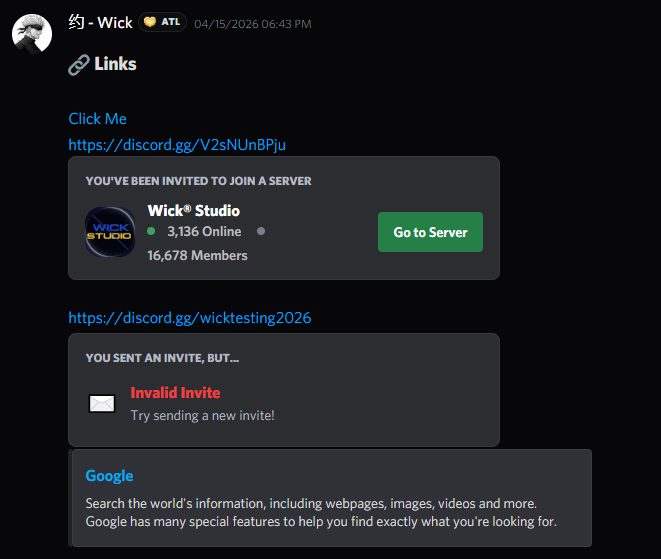
Invite Link Preview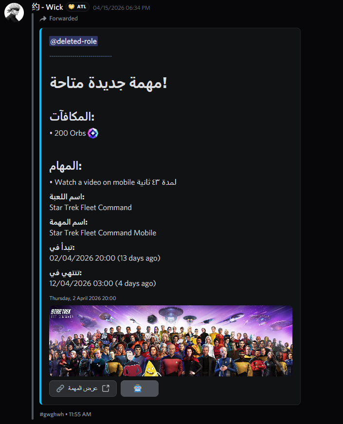
Rich Embed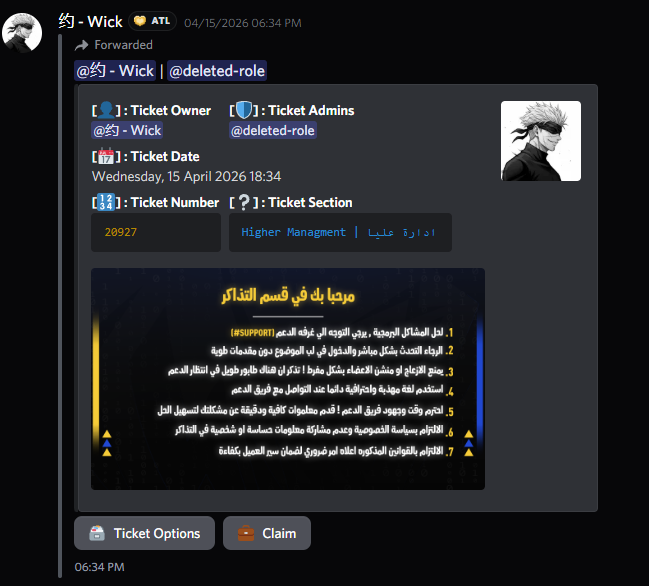
Embed with Fields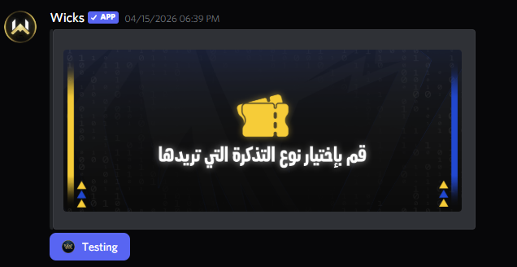
Embed with Image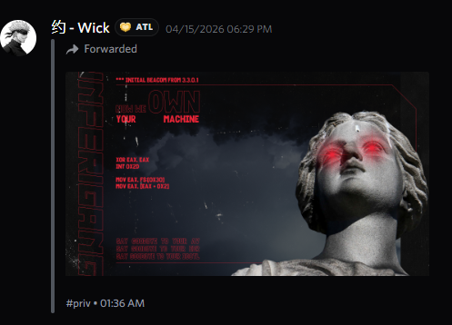
Forwarded Message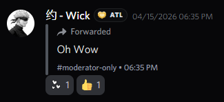
Forwarded + Reactions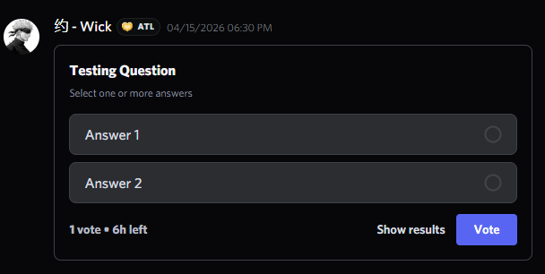
Poll / Voting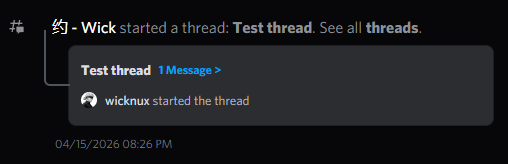
Thread Preview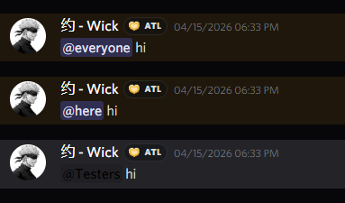
Mentions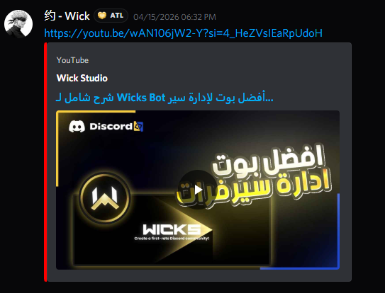
Links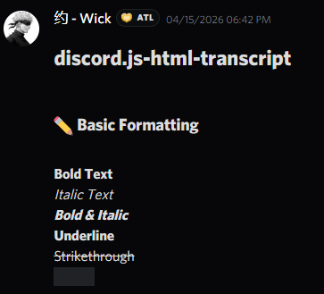
Markdown Formatting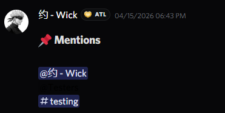
Code Blocks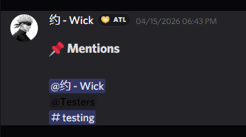
Headings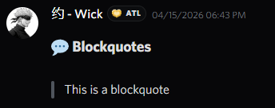
Block Quotes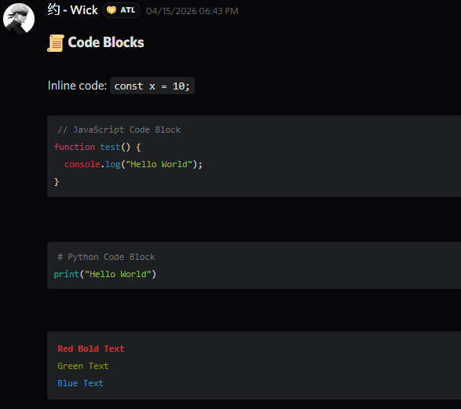
Lists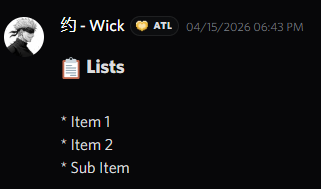
ANSI Code BlocksLive Demo
A real transcript rendered live inside the browser.